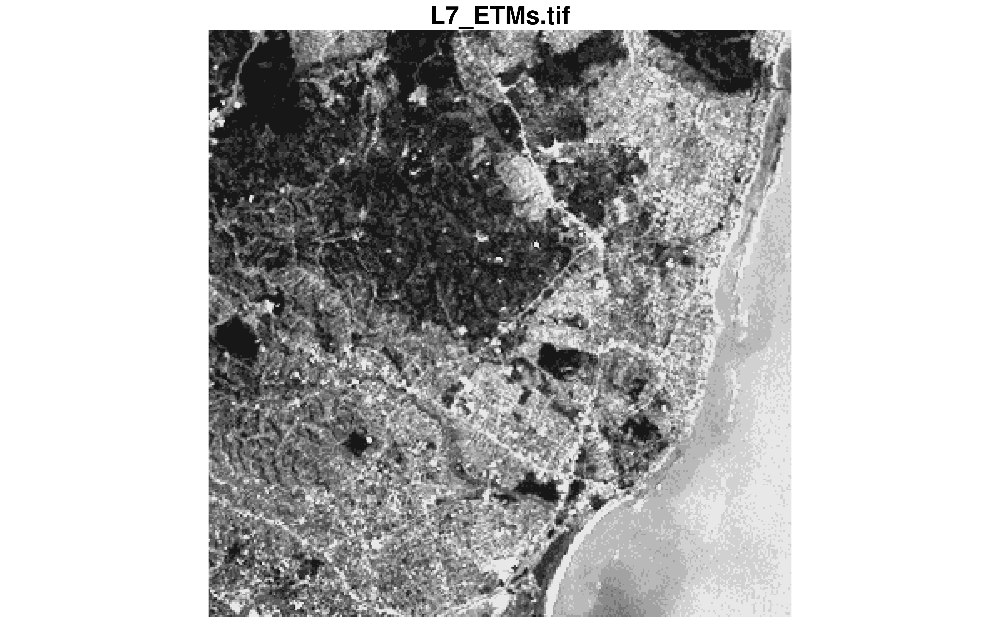
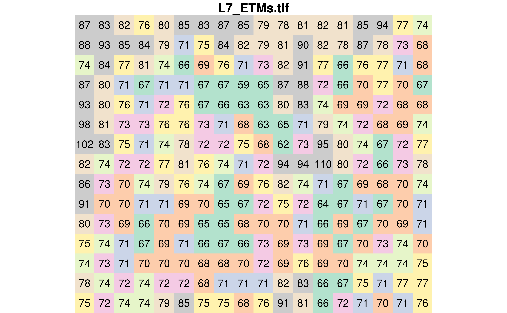
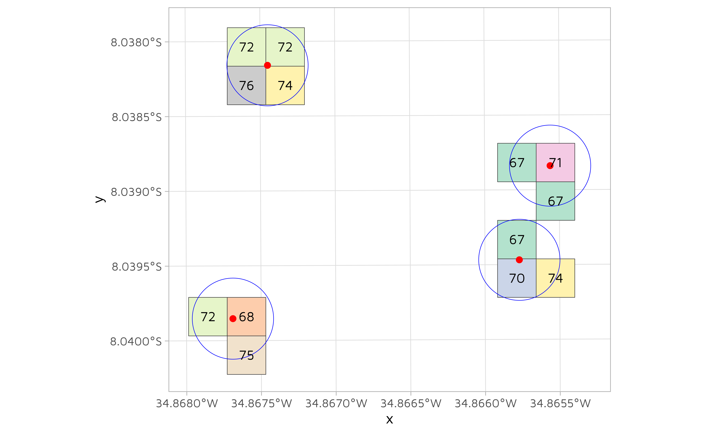
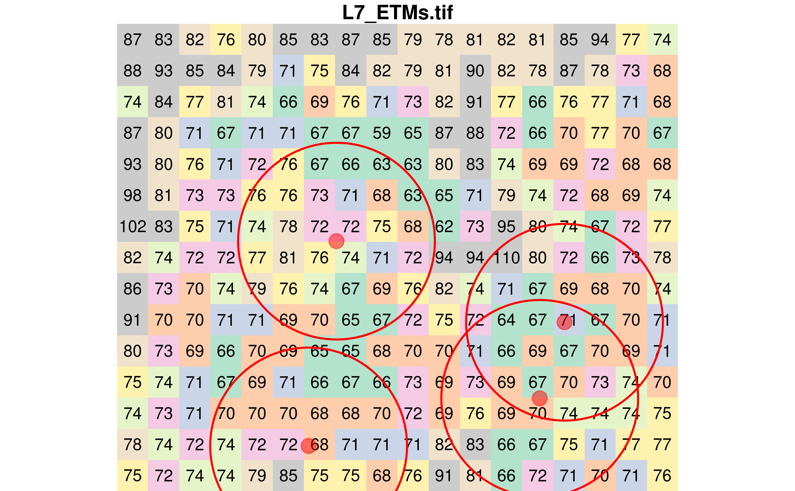
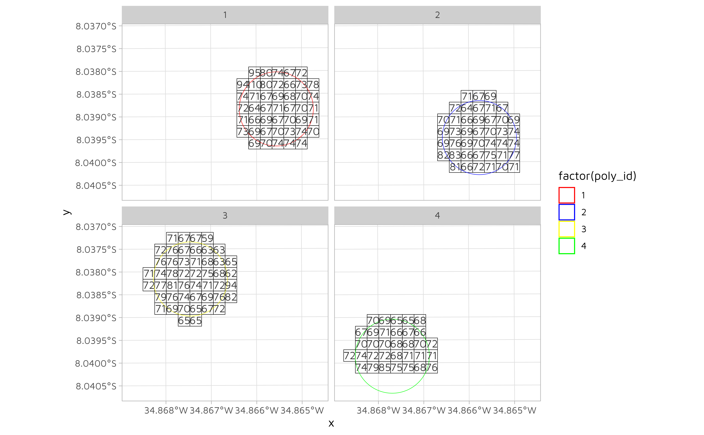

Introduction
For a long time, I have been using the raster package to manipulate raster data in R. Slowly, I am trying to work my way out with the new stars package. In this post, I am exploring different ways to extract values from a raster at different geographic locations. For this exercise, I am using a Landsat 7 image that is provided within the stars package. Each pixel has a resolution of 30 meters.
# Create a palette for later
pal <- as.character(paletteer::paletteer_d("RColorBrewer::Pastel2"))
# Open the tif and extract the 1 band
tif <- system.file("tif/L7_ETMs.tif", package = "stars")
r <- read_stars(tif)[, , , 1]
# What are the dimensions?
st_dimensions(r)
#> from to offset delta refsys point values x/y
#> x 1 349 288776 28.5 SIRGAS 2000 / UTM zone 25S FALSE NULL [x]
#> y 1 352 9120761 -28.5 SIRGAS 2000 / UTM zone 25S FALSE NULL [y]
#> band 1 1 NA NA NA NA NULLThis is what the original image looks like.
plot(r, key.pos = NULL)
To better visualize the process of subsetting raster values, let’s crop the image so we can see the pixels.
st_bbox(r)
#> xmin ymin xmax ymax
#> 288776.3 9110728.8 298722.8 9120760.8
r <- r %>%
st_crop(st_bbox(c(
xmin = 294000,
xmax = 294500,
ymin = 9110800,
ymax = 9111200
), crs = st_crs(r)))
plot(r, reset = FALSE, key.pos = NULL)We can also display the value of each pixel by using text_values = TRUE. This is also where I am using the pal colour vector I created earlier.
plot(r, text_values = TRUE, col = pal, key.pos = NULL)
Sampling random locations
Using this new raster, let’s randomly sample four points.
Extracting raster values using the sampled points
Extracting raster values at point locations can be done using the st_extract() function. As expected, four values have been extracted.
pts_values <- st_extract(r, pts)
pts_values
#> Simple feature collection with 4 features and 1 field
#> Geometry type: POINT
#> Dimension: XY
#> Bounding box: xmin: 294167 ymin: 9110827 xmax: 294401 ymax: 9111014
#> Projected CRS: SIRGAS 2000 / UTM zone 25S
#> L7_ETMs.tif geometry
#> 1 71 POINT (294401 9110940)
#> 2 70 POINT (294378.3 9110871)
#> 3 72 POINT (294192.5 9111014)
#> 4 68 POINT (294167 9110827)Extracting raster values using buffers around the sampled points
I found that extracting raster values using polygons was a bit more tedious (at least at this stage of my understanding of the stars package).
Generate buffers
Let’s generate buffers of 30 meters around each of the four sampled pixels.
poly <- st_buffer(pts, dist = 30)
class(poly)
#> [1] "sfc_POLYGON" "sfc"
plot(r, text_values = TRUE, col = pal, key.pos = NULL, reset = FALSE)
plot(st_sfc(poly), add = TRUE, border = "red", lwd = 2, col = NA)
plot(
pts,
add = TRUE,
pch = 21,
cex = 2,
bg = alpha("red", 0.5),
col = alpha("red", 0.5)
)We can visualize which pixels fall within each buffer. Looking at the next figure, one can ask why there are not always the same number of pixels in each buffer. The reason is that the arc of the circle must pass through the center of each pixel to be included in the buffer.
r[poly] %>%
st_as_sf() %>%
ggplot() +
geom_sf(aes(fill = factor(V1)), color = "#3c3c3c") +
geom_sf(data = st_sfc(poly), fill = NA, color = "blue") +
geom_sf(data = pts, color = "red", size = 2) +
geom_sf_text(aes(label = V1)) +
paletteer::scale_fill_paletteer_d("RColorBrewer::Pastel2") +
theme(
legend.position = "none"
)
Extracting pixel values covered by the polygons
Now that we have defined four buffers with a 30 meters radius, we could be tempted to re-use st_extract().
st_extract(r, poly)
#> stars object with 2 dimensions and 1 attribute
#> attribute(s):
#> Min. 1st Qu. Median Mean 3rd Qu. Max.
#> L7_ETMs.tif 68.33333 69.83333 71 70.95833 72.125 73.5
#> dimension(s):
#> from to offset delta refsys point
#> geometry 1 4 NA NA SIRGAS 2000 / UTM zone 25S FALSE
#> band 1 1 NA NA NA NA
#> values
#> geometry POLYGON ((294431 9110940, 2...,...,POLYGON ((294197 9110827, 2...
#> band NULLSurprisingly, we can not use st_extract() with polygons. One option is to use aggregate(). In our example, between three and four pixels are falling under each buffer. This is why we have to tell the aggregate() function how to summarize the values within each buffer with the FUN parameter.
# Extract the average value per polygon
x <- aggregate(r, poly, FUN = mean)
st_as_sf(x)
#> Simple feature collection with 4 features and 1 field
#> Geometry type: POLYGON
#> Dimension: XY
#> Bounding box: xmin: 294137 ymin: 9110797 xmax: 294431 ymax: 9111044
#> Projected CRS: SIRGAS 2000 / UTM zone 25S
#> V1 geometry
#> 1 68.33333 POLYGON ((294431 9110940, 2...
#> 2 70.33333 POLYGON ((294408.3 9110871,...
#> 3 73.50000 POLYGON ((294222.5 9111014,...
#> 4 71.66667 POLYGON ((294197 9110827, 2...
# Extract the minimum value per polygon
x <- aggregate(r, poly, FUN = min)
st_as_sf(x)
#> Simple feature collection with 4 features and 1 field
#> Geometry type: POLYGON
#> Dimension: XY
#> Bounding box: xmin: 294137 ymin: 9110797 xmax: 294431 ymax: 9111044
#> Projected CRS: SIRGAS 2000 / UTM zone 25S
#> V1 geometry
#> 1 67 POLYGON ((294431 9110940, 2...
#> 2 67 POLYGON ((294408.3 9110871,...
#> 3 72 POLYGON ((294222.5 9111014,...
#> 4 68 POLYGON ((294197 9110827, 2...
# Extract the maximum value per polygon
x <- aggregate(r, poly, FUN = max)
st_as_sf(x)
#> Simple feature collection with 4 features and 1 field
#> Geometry type: POLYGON
#> Dimension: XY
#> Bounding box: xmin: 294137 ymin: 9110797 xmax: 294431 ymax: 9111044
#> Projected CRS: SIRGAS 2000 / UTM zone 25S
#> V1 geometry
#> 1 71 POLYGON ((294431 9110940, 2...
#> 2 74 POLYGON ((294408.3 9110871,...
#> 3 76 POLYGON ((294222.5 9111014,...
#> 4 75 POLYGON ((294197 9110827, 2...Overlapping polygons
The method using the aggregate() function is largely based on an answer I received on stackoverflow. As specified by the user who answered my question, there is one catch.
Keep in mind that if there is overlap between polygons (unlike in this example) then each raster value is only “counted” once, in the first polygon it falls in (to comply with the ordinary behaviour of aggregate).
To demonstrate it, we will increase the buffer radius to 90 meters. As seen in the next figure, two buffers are overlapping.
# Create 90 meters radius buffers
poly <- st_buffer(pts, dist = 90)
plot(r, text_values = TRUE, col = pal, key.pos = NULL, reset = FALSE)
plot(st_sfc(poly), add = TRUE, border = "red", lwd = 2, col = NA)
plot(
pts_values,
add = TRUE,
pch = 21,
cex = 2,
bg = alpha("red", 0.5),
col = alpha("red", 0.5)
)
Now let’s calculate the average pixel value in each polygon.
Using the aggregate() function
As previously done with the smaller polygons, we can also use the aggregate() function.
averaged_using_aggregate <- aggregate(r, poly, FUN = mean) %>%
st_as_sf()
averaged_using_aggregate
#> Simple feature collection with 4 features and 1 field
#> Geometry type: POLYGON
#> Dimension: XY
#> Bounding box: xmin: 294077 ymin: 9110737 xmax: 294491 ymax: 9111104
#> Projected CRS: SIRGAS 2000 / UTM zone 25S
#> V1 geometry
#> 1 71.48485 POLYGON ((294491 9110940, 2...
#> 2 71.40000 POLYGON ((294468.3 9110871,...
#> 3 71.90625 POLYGON ((294282.5 9111014,...
#> 4 70.92000 POLYGON ((294257 9110827, 2...Using the st_join() function (manually)
First, convert the polygons into a sf object and assign a unique id to each polygon.
poly_sf <- poly %>%
st_as_sf() %>%
rowid_to_column(var = "poly_id")
poly_sf
#> Simple feature collection with 4 features and 1 field
#> Geometry type: POLYGON
#> Dimension: XY
#> Bounding box: xmin: 294077 ymin: 9110737 xmax: 294491 ymax: 9111104
#> Projected CRS: SIRGAS 2000 / UTM zone 25S
#> poly_id x
#> 1 1 POLYGON ((294491 9110940, 2...
#> 2 2 POLYGON ((294468.3 9110871,...
#> 3 3 POLYGON ((294282.5 9111014,...
#> 4 4 POLYGON ((294257 9110827, 2...Convert the raster into a sf object.
r_sf <- st_as_sf(r)
r_sf
#> Simple feature collection with 270 features and 1 field
#> Geometry type: POLYGON
#> Dimension: XY
#> Bounding box: xmin: 293991.8 ymin: 9110786 xmax: 294504.8 ymax: 9111213
#> Projected CRS: SIRGAS 2000 / UTM zone 25S
#> First 10 features:
#> V1 geometry
#> 1 87 POLYGON ((293991.8 9111213,...
#> 2 83 POLYGON ((294020.3 9111213,...
#> 3 82 POLYGON ((294048.8 9111213,...
#> 4 76 POLYGON ((294077.3 9111213,...
#> 5 80 POLYGON ((294105.8 9111213,...
#> 6 85 POLYGON ((294134.3 9111213,...
#> 7 83 POLYGON ((294162.8 9111213,...
#> 8 87 POLYGON ((294191.3 9111213,...
#> 9 85 POLYGON ((294219.8 9111213,...
#> 10 79 POLYGON ((294248.3 9111213,...Join the raster and the polygons together and drop the pixels that were not matched to any buffer.
We can now visualize the pixels in each buffer.
df_sf %>%
ggplot(aes(color = factor(poly_id))) +
geom_sf(fill = NA, color = "black", size = 0.25) +
geom_sf(data = poly_sf, fill = NA) +
geom_sf_text(aes(label = V1), color = "#3c3c3c") +
scale_color_manual(
breaks = c(1, 2, 3, 4),
values = c("red", "blue", "yellow", "green")
) +
facet_wrap(~poly_id)
Finally, we can calculate the average pixel values in each polygon.
averaged_using_st_join <- df_sf %>%
group_by(poly_id) %>%
summarise(V1 = mean(V1), n = n())
averaged_using_st_join
#> Simple feature collection with 4 features and 3 fields
#> Geometry type: POLYGON
#> Dimension: XY
#> Bounding box: xmin: 294048.8 ymin: 9110786 xmax: 294504.8 ymax: 9111128
#> Projected CRS: SIRGAS 2000 / UTM zone 25S
#> # A tibble: 4 × 4
#> poly_id V1 n geometry
#> <int> <dbl> <int> <POLYGON [m]>
#> 1 1 72.8 45 ((294305.3 9110871, 294305.3 9110900, 294305.3 9110928, 2…
#> 2 2 71.0 42 ((294276.8 9110814, 294276.8 9110843, 294276.8 9110871, 2…
#> 3 3 71.2 48 ((294077.3 9111014, 294077.3 9111042, 294105.8 9111042, 2…
#> 4 4 70.7 33 ((294048.8 9110843, 294077.3 9110843, 294077.3 9110871, 2…If we compare both the aggregate() and st_join() methods, we can see that there are differences.
averaged_using_aggregate$V1
#> [1] 71.48485 71.40000 71.90625 70.92000
averaged_using_st_join$V1
#> [1] 72.80000 71.02381 71.22917 70.72727At this time of writing this, I can not find why I am getting different values. Please leave out a comment if you have an idea!